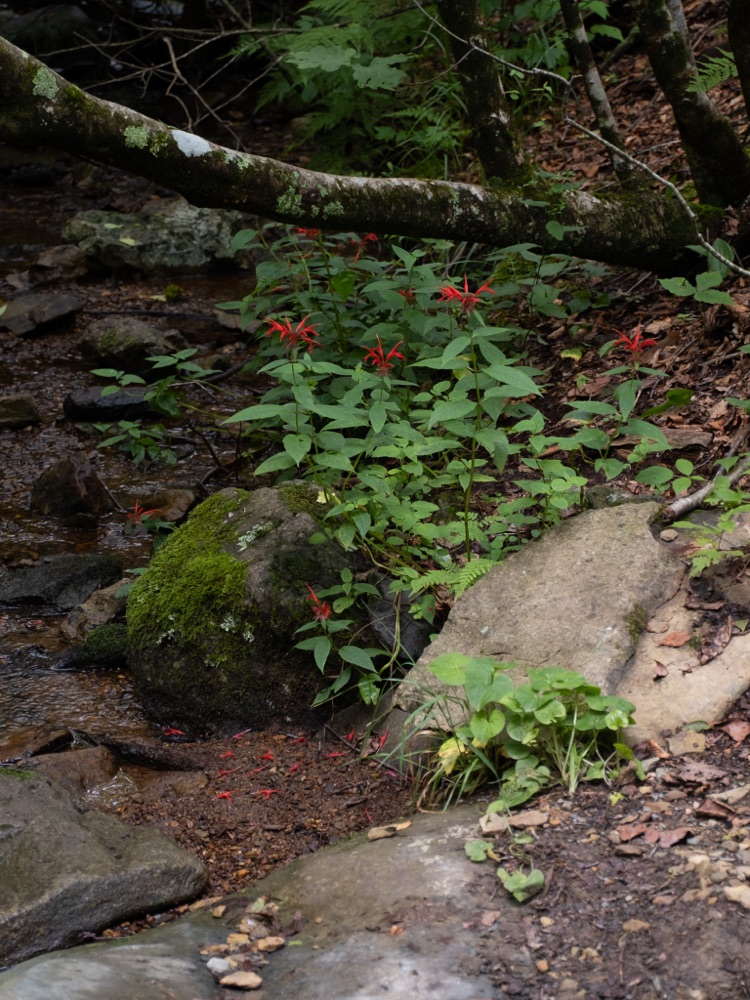
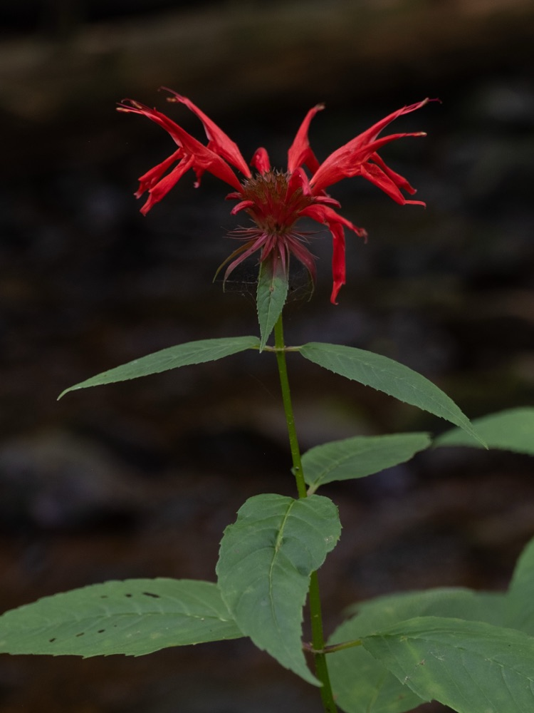
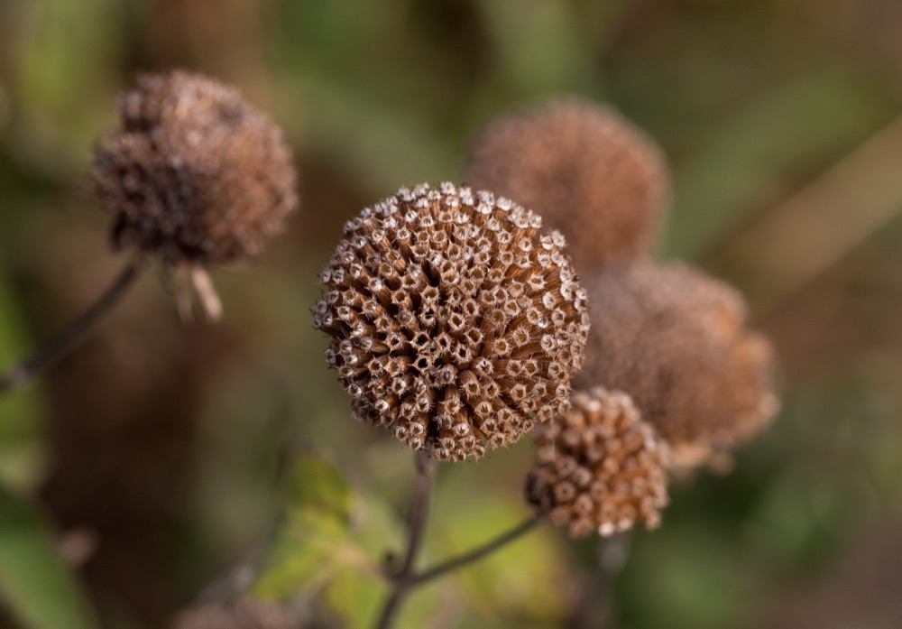

Bee Balm
Monarda didyma
☀️ Full–part sun
💧 Avg–high
📏 2–4 ft
🌸 Jul–Aug
🌎 NE Native
🛠️ Easy
🌱 Year 1
🐝 Pollinator
Bright tubular flowers in red, pink, or purple that hummingbirds love. Aromatic minty leaves. Spreads by rhizomes — happily forms a patch.
Check-in signs
- White powder on leaves → powdery mildew (the #1 bee balm issue)
- Wilting in afternoon → thirsty; bee balm doesn't like to dry out
- Tall floppy stems → didn't get pinched; will be fixed by year 2
- Yellow lower leaves → normal late-summer aging, especially after mildew
Watch out for
- Powdery mildew — improve airflow; water at base, not overhead
- Spreading where you don't want it (controllable but vigorous)
Care notes
Pinch tips once in late May for bushier growth. Deadhead for a second flush. Cut to ground after frost — or leave 6" stubs as visual markers if reseeding is an issue. Year 1 watch: water consistently — first-year mildew often comes from drought stress.